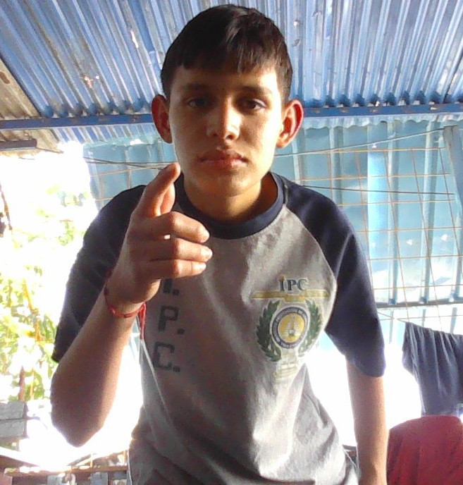

Curriculum Vitae
MI MISMO
Soy joven: Mi nombre es Franklin Noé Flores Vásquez tengo 18 años mi deporte favorito es el futbol,juego en la posición de delantero actualmente juego 1 ves por semana,estudio un bachillerato plan fin de semana y tambien trabajo entre semana mi objetivo es seguir estudiando y aprenden más de lo que ya se.
Volver al menuNombre: Franklin Noé Flores Vásquez
Direccion: 8calle 3-40 zona 1 Villa Nueva
Fecha Nac.: 17/03/2008
Telefono: 50679913
DPI: 43043450450101
email: fraklinvasquez234@gmail.com
Volver al menu
Parvulos: Escuela Rural Mixta Aldea Picuazt
Primaria: Escuela Rural Mixta Aldea Picuazt
Segundaria: Instituto Telesecundaria Oliverio Castañeda
Diversificados: Instituto Profesional de Computación
Otros: no
Virtuales: no
Volver al menu
Sigue estos pasos: